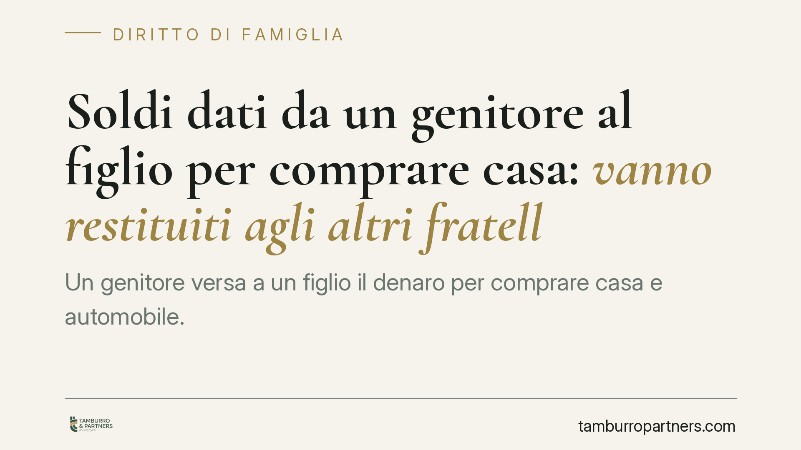

Soldi dati da un genitore al figlio per comprare casa: vanno restituiti agli altri fratelli?
Un genitore versa a un figlio il denaro per comprare casa e automobile. Alla sua morte, quelle somme vanno conteggiate nell'eredità e divise con gli altri fratelli? La Corte di Cassazione risponde di sì: si tratta di donazioni indirette soggette a collazione. Una pronuncia che incide direttamente sugli equilibri patrimoniali tra coeredi e sulla pianificazione dei passaggi di denaro in famiglia.

Il caso
Un padre, in vita, fornisce a uno dei figli le somme necessarie per acquistare un immobile e un'automobile. Alla sua morte gli altri coeredi chiedono che quel denaro venga computato nella massa ereditaria da dividere. Il figlio beneficiato si oppone, sostenendo che si trattasse di donazioni particolari, sottratte al conteggio. La Corte di Cassazione respinge questa tesi.
Inquadramento normativo
Il nodo è la qualificazione giuridica del trasferimento di denaro. Non ogni passaggio di somme tra genitore e figlio segue le stesse regole.
La donazione diretta di beni di valore non modico richiede, a pena di nullità, la forma dell'atto pubblico (art. 782 cod. civ., che impone la forma *ad substantiam*, cioè necessaria per la validità stessa dell'atto). Diverso è il caso della donazione indiretta: qui il genitore non dona formalmente il denaro, ma raggiunge lo stesso risultato liberale attraverso un'operazione diversa, ad esempio pagando il prezzo dell'immobile che il figlio acquista. In questo caso la forma solenne non è richiesta, perché l'arricchimento deriva dall'operazione economica complessiva.
La Cassazione esclude invece che si tratti di donazione obnuziale, cioè la donazione fatta in vista di un futuro matrimonio, disciplinata dall'art. 785 cod. civ. Questa figura ha requisiti precisi: deve essere fatta in considerazione di nozze determinate e richiede comunque la forma scritta. In mancanza di tali presupposti, la dazione di denaro per comprare casa resta una comune donazione indiretta.
La conseguenza pratica è decisiva: le donazioni indirette sono soggette a collazione (artt. 737 e seguenti cod. civ.). La collazione è l'obbligo per figli e coniuge che accettano l'eredità di conferire nella massa da dividere tutto ciò che hanno ricevuto in donazione dal defunto. Serve a garantire la parità di trattamento tra coeredi: chi ha già ricevuto denaro in vita non può pretendere, alla morte, la stessa quota di chi non ha avuto nulla.
Implicazioni pratiche
Per chi riceve denaro da un genitore per comprare casa, la pronuncia significa che quella somma non è un regalo "definitivo" e insindacabile. Alla morte del genitore, i fratelli potranno chiederne il conteggio nella divisione ereditaria.
Per gli altri coeredi, significa poter contestare le disparità: il valore ricevuto dal fratello beneficiato va imputato alla sua quota, riequilibrando la divisione.
Attenzione a un equivoco diffuso: la mancanza di un atto notarile non "salva" la somma dalla collazione. Anzi, proprio perché si tratta di donazione indiretta, la forma scritta non serve e il conferimento resta dovuto. Chi confida nell'assenza di documenti formali per sottrarre il denaro al calcolo parte da un presupposto errato.
Rileva anche la distinzione dalla semplice restituzione di un prestito. Se le somme erano un mutuo e non una liberalità, non si applica la collazione ma le regole del debito. La prova della natura dell'operazione diventa quindi centrale e spesso controversa.
Cosa fare in concreto
- Documenta la natura del trasferimento al momento della dazione: chiarisci per iscritto se si tratta di donazione, anticipo sulla quota ereditaria o prestito. L'ambiguità si paga anni dopo.
- Conserva le evidenze dei pagamenti (bonifici, causali, atti di acquisto) perché serviranno a ricostruire l'operazione in sede di divisione.
- Valuta la dispensa dalla collazione: il genitore può prevederla espressamente, ma nei limiti della quota disponibile e senza ledere i diritti dei legittimari. Consigliamo di formalizzarla con l'assistenza di un notaio.
- Prima di accettare l'eredità, ricostruisci le liberalità ricevute da ciascun coerede: incidono sul calcolo delle quote.
- Se sei coerede "non beneficiato", verifica l'esistenza di donazioni indirette a favore degli altri prima di definire la divisione.
La materia tocca equilibri familiari delicati e produce effetti a distanza di anni. Un confronto preventivo con un professionista aiuta a prevenire contenziosi tra fratelli che spesso nascono proprio da trasferimenti di denaro mai chiariti.
---
Contributo informativo a cura di Tamburro & Partners - Avv. Giuseppe Tamburro. Non costituisce parere legale.
Ogni famiglia ha il suo equilibrio.
Separazione, divorzio, affidamento, assegno: se vuoi un confronto riservato su una specifica situazione, scrivi allo studio. Ti rispondiamo entro un giorno lavorativo.